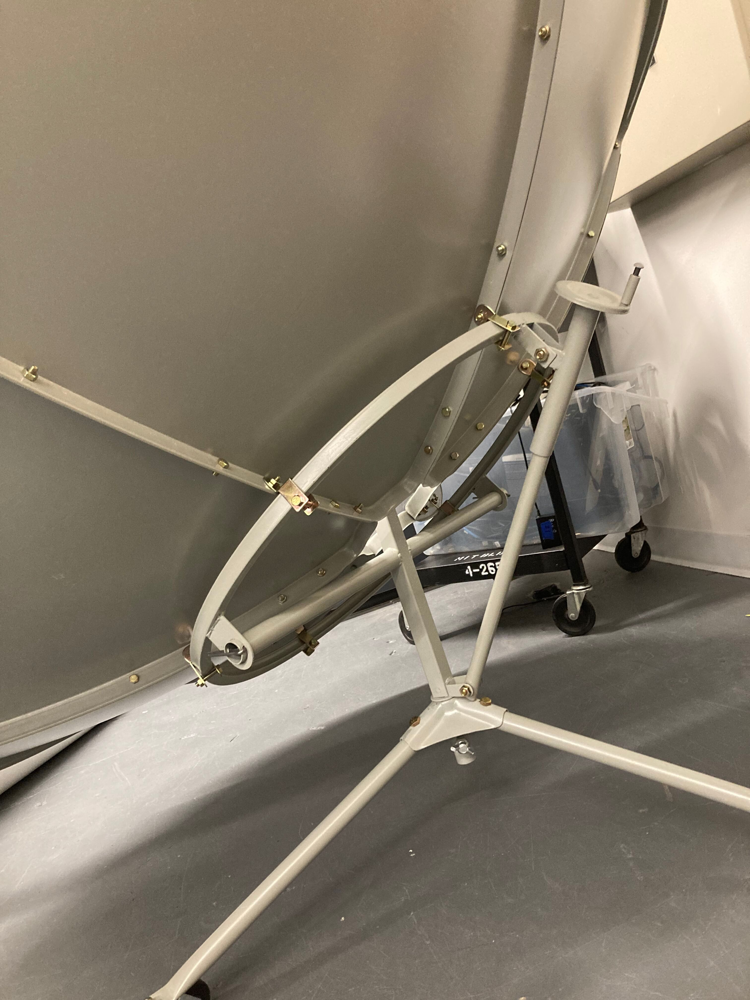
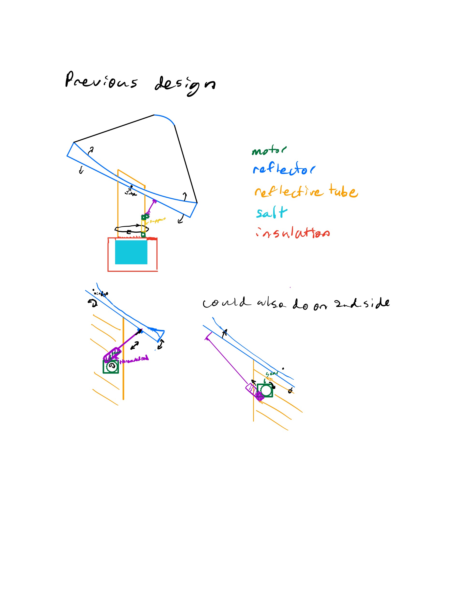
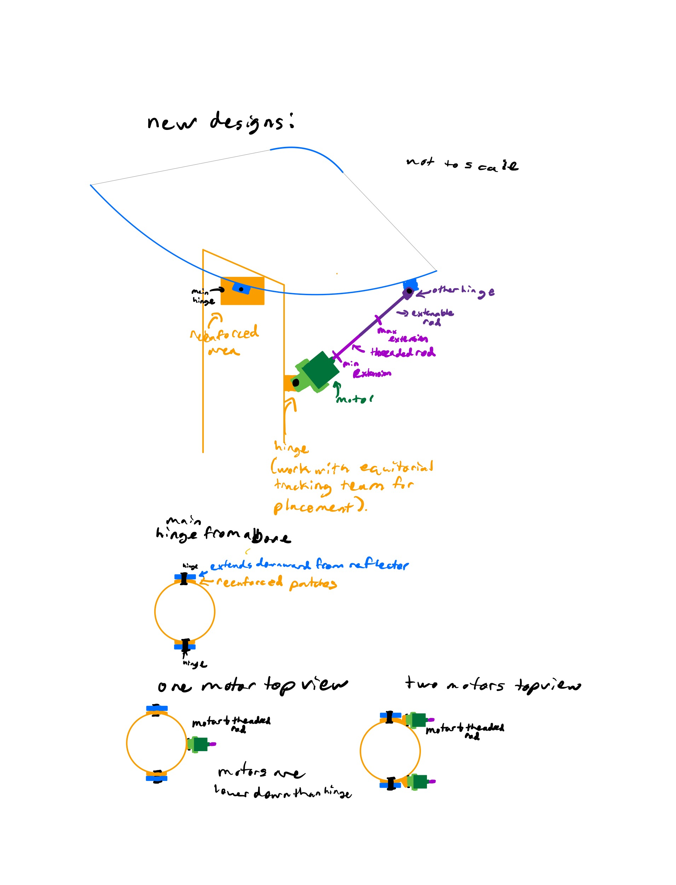
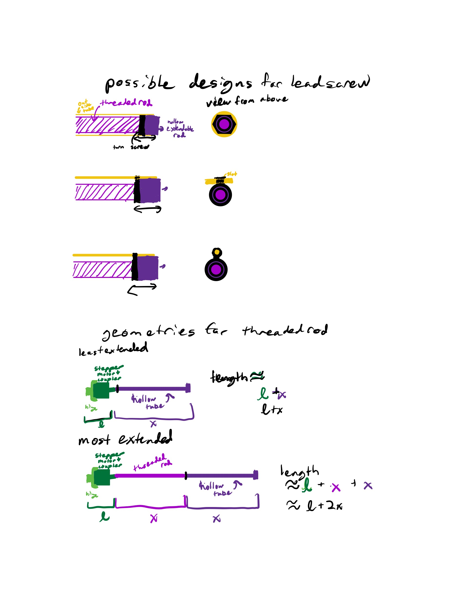
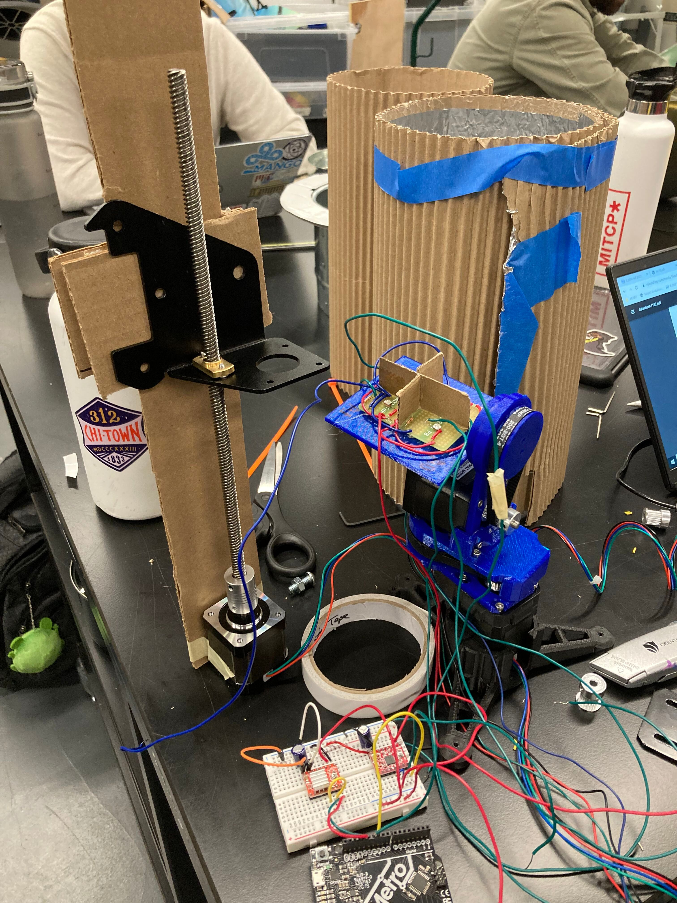
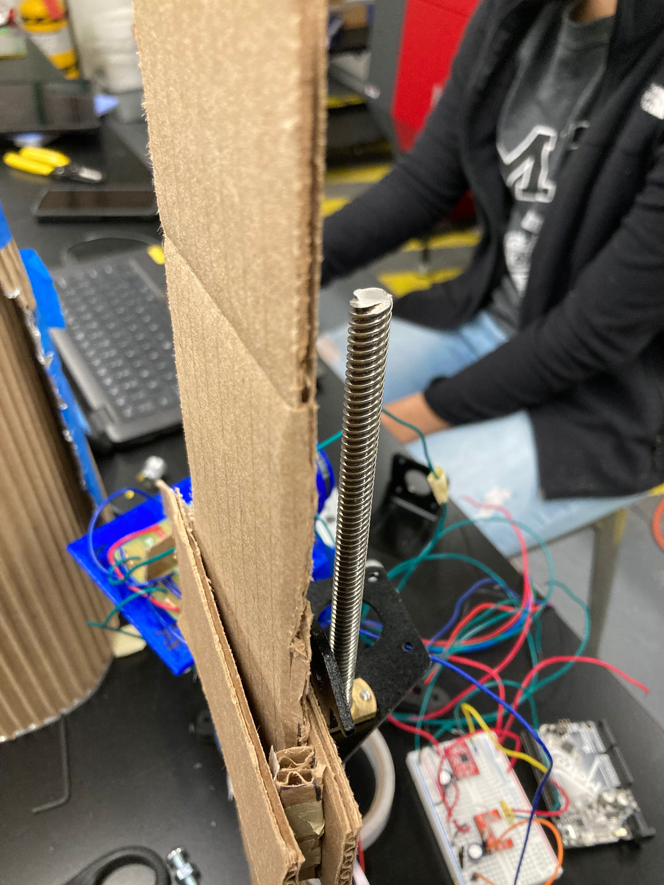
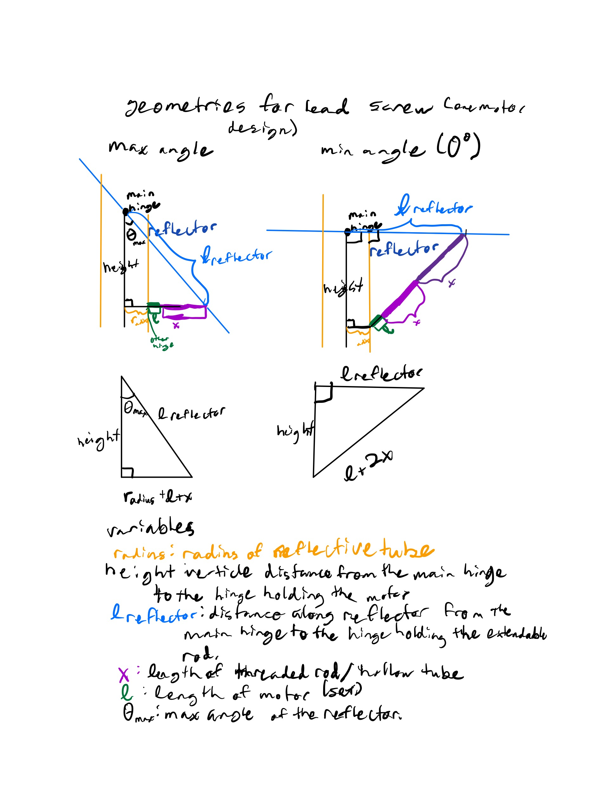

## Week 9:
### Monday:
I partnered with Catherine to work on the azimuth angle tracking system. Going off of the designs we had
previously talked about, we discussed how lead screws/threaded rods could be implemented. We also examined
the large solar tracker obtained from Amazon in order to see how a lead screw could be used to adjust the
azimuth angle and talked about how this would be relevant to our design. We noticed that we would need two
hinges on either side of our extendable bar in order for our design to work. We also discussed how we would
need to create the hinge at the top of our metal tube connecting the reflector. We started to make some
sketches. We guessed that one of our biggest challanges would be attaching our extendable rod to the reflective
tube, and we will need to work with the other tracking team to determine how to do this.



### Wednesday:
Catherine and I continued our discussion of lead screws. We talked about how there would need to be
something that would prevent the screw from remaining still relative to the threaded rod. We started making
sketches for this.

In addition, we made a prototype stepper motor powered lead screw. I built the cardboard backing that forced
the screw to move up and down while Catherine created the circuitry and program to control the motor. We also
experimented with quarter and half steps to create smoother motion. Our prototype was underconstrained, so it
was more wobbly and noisy than we would like our final design to be. We attempted to test how much weight our
prototype could hold. We did not have any weights however, so we were not able to determine this accurately.
We did manage to see that it was able to carry two full water bottles up and down, which is a good sign.


Finally, we started to discuss the angles and lengths our rod would be at for the largest and smallest altitude
angles for our reflector.
